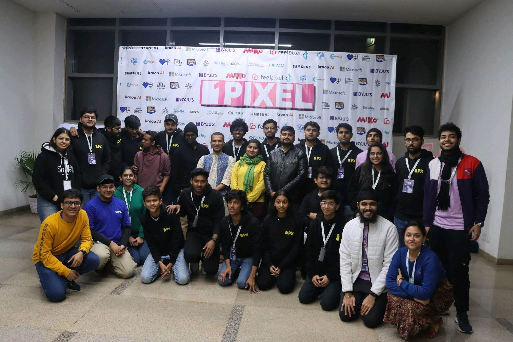
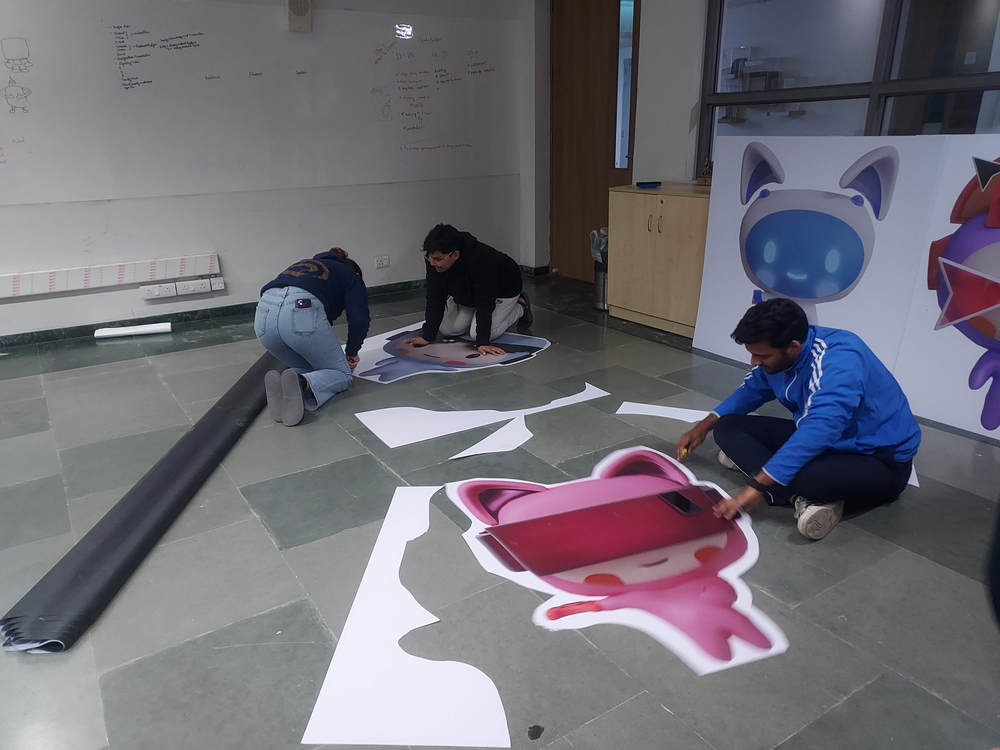
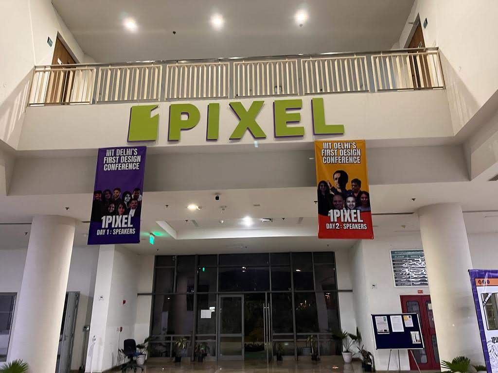
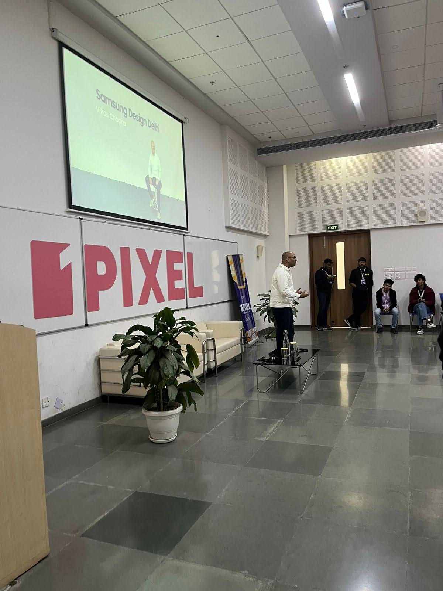
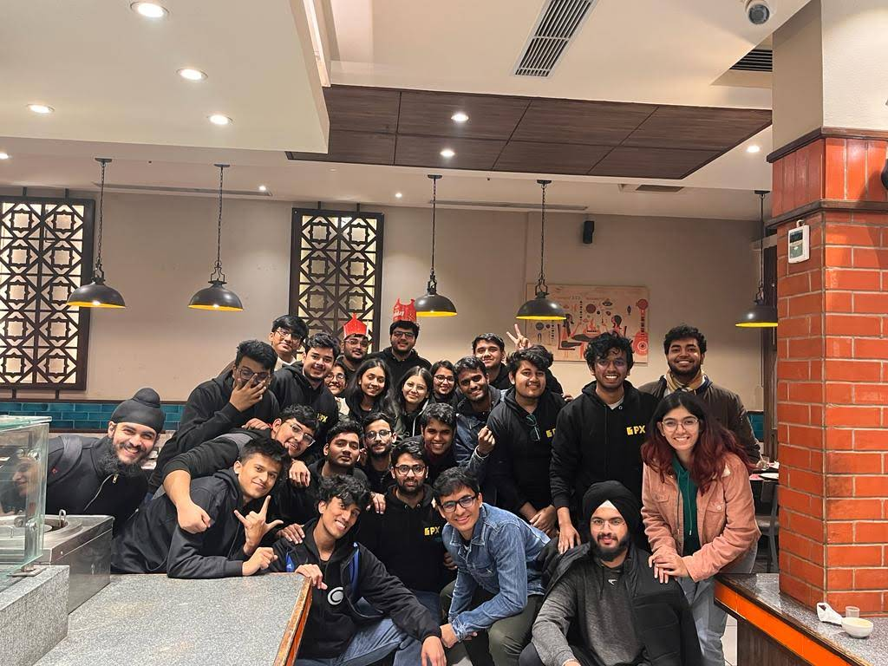

Organising 1Pixel Design Conf'23 - India's largest student led Design Conference
The 1Pixel Design Conference, held at the Indraprastha Institute of Information Technology, Delhi on 13 & 14 January,2023, was not just an event; it was the culmination of a spark of an idea that turned into a thriving design community. As one of the co-founders and conveners, I enjoyed being being part of an incredible journey filled with challenges, triumphs, and unforgettable experiences. In this blog, I will take you through the rollercoaster ride of organizing the 1Pixel Design Conference and share the lessons learned along the way.
Ideation
It all began with a small group of design enthusiasts, eager to bring back the culture of design and ignite conversations around it. With limited resources and a passionate team, we started with a vision of hosting a design meetup. Little did we know that our aspirations would soon grow into organizing a full-fledged design conference. The challenges were immense, from finding the right speakers and sponsors to securing venues and managing finances. Despite facing numerous rejections and doubts about our scale and reach, we remained determined to make our dream a reality.
The dream team
To navigate the complexities of organizing a design conference, we recognized the need for a diverse team with expertise in various areas. We reached out to individuals with backgrounds in graphic design, management, and 3D design to form our dream team. Each member brought unique skills and perspectives, making our collective efforts stronger and more effective. Together, we tackled every obstacle that came our way.
Turning Challenges into Opportunities
As we delved deeper into the planning process, we encountered setbacks that tested our resilience. Our caterers backed out, merchandise partners failed to deliver as promised, and some speakers withdrew their participation. However, we refused to let these obstacles deter us. With our unwavering determination, we swiftly found new caterers, secured additional sponsors, and filled the gaps left by the departing speakers. We embraced the concept of "worst case scenario" (sometimes a little too much :) )planning, ensuring we were prepared for any unforeseen challenges.
Growth and Outreach
Promoting the conference and attracting participants was a crucial aspect of our journey. We devised a comprehensive social media strategy and actively reached out to colleges and design enthusiasts to create awareness and anticipation for the event. We established partnerships with other organizations and implemented a campus ambassador program to expand our reach. Despite initial difficulties, our marketing efforts gained traction, and registrations started pouring in.
Curating an Exceptional Speaker Lineup
One of our primary goals was to bring together a diverse group of influential speakers from different domains of design. We carefully curated a lineup that encompassed graphics, animation, user experience, and more. Notable speakers from prestigious organizations such as Samsung, Oppo, Wadhwani AI, Digitoonz and Microsoft joined us to share their insights and expertise. The commitment of these speakers further amplified the credibility and appeal of the conference.

Capacity Challenges
As registrations surged, we encountered a new (funny) challenge— exceeding the venue's capacity. Initially concerned about low participation, we were suddenly faced with the task of managing an unexpectedly large audience. The situation required us to close registrations to ensure the comfort and safety of attendees. Although it was a bittersweet decision, it affirmed the success and popularity of the 1Pixel Design Conference.
The D-day
With meticulous planning and sleepless nights behind us, the conference finally arrived. We welcomed over 200 participants from 25+ colleges, eagerly awaiting two power-packed days of inspiration and learning. The event featured a series of insightful sessions, workshops, a designathon, and mini events. Our speakers shared their expertise, providing valuable insights into the world of design. The conference concluded with an exciting workshop by renowned Art Attack host, and a prize distribution ceremony for the designathon.
Reflection and Future Endeavors
The 1Pixel Design Conference was an incredible success, far surpassing our initial expectations. It provided a platform for designers to connect, learn, and showcase their talents. The event opened doors for networking, guidance, and future collaborations. Our team cherishes the memories and accomplishments, and we look forward to what lies ahead. Whether it's the 1Pixel Design Conference '24 or the 2Pixel Design Conference, our passion for design and community remains unwavering.
Organizing the 1Pixel Design Conference was a remarkable journey filled with challenges, triumphs, and invaluable lessons. From humble beginnings to hosting a large-scale event, our team's dedication and resilience drove us forward. We proved that passion, perseverance, and a strong team can transform a simple idea into a thriving community. As we move forward, we are excited to continue nurturing the design culture and creating opportunities for designers to shine. Stay tuned for more remarkable design experiences on the horizon!
Apart from the resounding success of the conference, organizing the 1Pixel Design Conference provided me with personal growth and valuable experiences. It allowed me to delve deeper into self-discovery, broaden my network, establish meaningful connections, and learn to trust others. Throughout the journey, I realized that leadership doesn't always mean being involved in every decision. It involves empowering others and respecting their decision-making abilities. Moreover, I found a new family of passionate individuals who share my love for design. I forged strong bonds and formed friendships based on trust and mutual support. Ultimately, ensuring a positive outcome for everyone involved became the most important achievement for me.